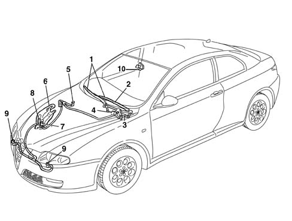
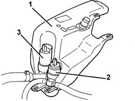
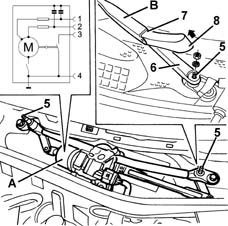
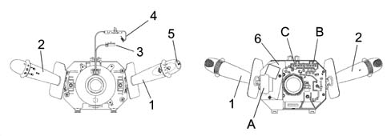
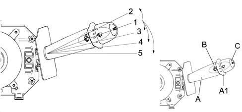
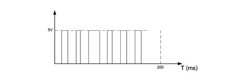
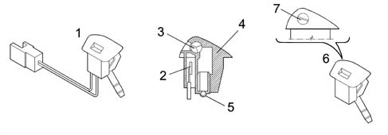
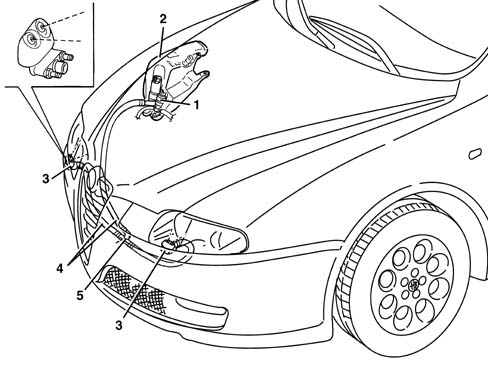
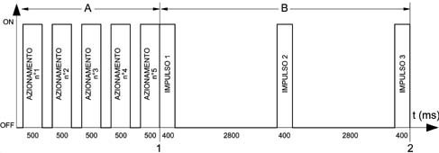
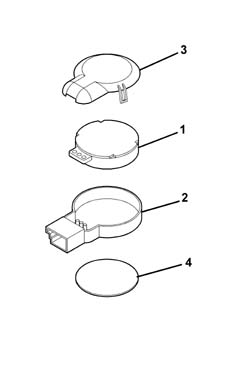

INTRODUCTION - SCREEN WASHERS AND HEADLAMP WASH/WIPE
- Path
- Descriptions > 50 AUXILIARY UNITS > 5050 SCREEN WASHERS AND HEADLAMP WASH/WIPE > INTRODUCTION - SCREEN WASHERS AND HEADLAMP WASH/WIPE
- Kind
- system description
- Applies to
- all engines; all production periods
- Interactive page
- https://sloeber94.github.io/elrnDB-aGt/en/#/125000395
Applies to: all engines; all production periods
SPECIFICATIONS
INTRODUCTION
The vehicle is equipped with a system that cleans and washes the front windscreen. The vehicle may be fitted as an option with a pressurised liquid washing system for the front headlamps.

1 - Windscreen wiper blade
2 - Wiper arm
3 - Windscreen wiper mechanism
4 - Windscreen wiper motor
5 - Windscreen washer jets
6 - Reservoir
7 - Windscreen washer pump
8 - Headlamp washer pump
9 - Headlamp washer jets
10 - Rain sensor
RESERVOIR
The reservoir is located in the right side of the wheel arch compartment and it allows the screen washer system pump to supply the water-antifreeze mixture required to clean the front window. If the vehicle is equipped with the relevant option, it also supplies the headlamp washer system via a special pump.
The reservoir capacity ensures a minimum of 25 washing cycles and it ranges in size from a minimum of 5 litres for the version without a headlamp washer to up to 6 litres if equipped with a headlamp washer.
The reservoir is made out of plastic and contains external housings for the pump that supplies the windscreen washer and headlamp washers (if fitted).

1 - Windscreen washer fluid reservoir
2 - Pump supplying fluid to the nozzles
3 - Headlamp washer system pump (if present)
WINDSCREEN WASH/WIPE
The windscreen wash/wipe assembly cleans and washes the windscreen.
Two types are supplied, depending on the vehicle specification level (basic and deluxe). These differ essentially in the presence (as an option) on the deluxe version of an electronic detection device that identifies the presence of water drops on the windscreen (rain sensor).
The innovative features of the windscreen washer assembly are essentially:
- The electronic control system is separate from the control motor whereas both units were contained in a single component on the previous wipers.
- The smart wash operating strategy applied for the windscreen wiper.
- The presence (optional) of a rain sensor
The winscreen wiper mechanism was developed to optimise the sweep area and allow the brushes to operate under the correct conditions (wiping angle, pressure on the windscreen) at all times.
Due to the electronic control system and according to the position of the right steering wheel stalk switch, the system manages operation of the direct current wiper motor by means of two windings, i.e. at two rotating speeds.
- Low speed: 45 ± 5 rpm
- High speed: 65 ± 7 rpm
When in continuous operating mode the rpm corresponds to the number of blade beats.
The rain sensor allows automatic assembly operation under weather conditions that would require the user to intervene repeatedly and continuously.
The smart washing strategy assured by the electronic control system allows the residual traces of washer fluid that are normally appearent at the end of the washing cycle on a conventional winscreen wash/wipe system to be removed.
The following figure shows the front winscreen wiper gear motor unit and the linkage.

A - Windscreen wiper motor
1 - Second speed
2 - First speed
3 - Cam signal
4 - Earth
B - Wiper arm
5 - Drive shaft axle
6 - Block
7 - Area to be pressed at installation
8 - Click-on block cover
Composition and operation
The front winscreen wiper assembly consists essentially of the following components:
- two wiper arms with blades. The wiper arms come in two types: profiled arms with low parking position (for ECE areas), conventional arms without low parking position (for SAE areas), blades used in the conventional system with parallel, synchronous movement.
- a d.c. electric motor that allows arm movement and is equipped with a cam (consisting essentially of an active switch with earth) that notifies the electronic control system of motor lock. A motor with rated or 12V voltage can operate at voltages between 9-16V. It is equipped with a thermal protection switch and electromagnetic interference circuits for long, medium, short and ultrashort wavelengths on both vehicles.
- a pump driven by the right steering wheel stalk switch takes up washer fluid from the reservoir and feeds the jets on the bonnet lid through pipes.

1 - Right lever with wiper controls
2 - Left lever with lighting/direction controls
3 - Horn/radio control cable
4 - Airbag clock spring
5 - Trip computer control button
6 - Built in electronic module
ABC - Connectors
The stalk unit is the mechanism that contains the electronic circuit and the left stalk lever switching and automatic release mechanisms (turn signal).
The front section of the steering wheel stalk unit houses the CLOCK SPRING which is the interface element with the steering wheel.
The rear part contains a collar with retaining strip for fastening it to the steering column and supplementary fastenings that establish the axial and angular position of the stalk unit on the steering column.
The steering wheel stalk unit case contains fastenings for the upper and lower cover halves.
The electronic module is connected to the steering wheel stalk unit. The rear of the steering wheel stalk unit contains seats for the electrical connectors.
Multifunction switch or right lever
This includes the wiper controls.
All the controls are activated by operating either the stalk or the wheel control on the actual lever.
A button on the end of the stalk switch also controls trip computer functions.
Below is a list of the right stalk lever controls:

A) Windscreen wiper control;
A1) - Windscreen wiper intermittence adjustment/Rain sensor sensitivity
B) Winscreen wiper control;
C) Trip computer; control key;
Operating procedure
A) WINDSCREEN WIPER CONTROL (STALK)
WINDSCREEN WIPER CONTROL
This is operated by moving the stalk lever in the same plane as the steering wheel. The control can be operated to 5 different positions:
- Pos. 1= No circuit activated (STABILE) [POS. REST];
- Pos. 2 = Panic function (UNSTABLE) [ANTICLOCKWISE];
- Pos. 3 = Intermittent / Automatic(STABLE) [CLOCKWISE];
- Pos. 4= Continuous 1st SPEED (STABLE) [CLOCKWISE];
- Pos. 4= Continuous 2nd SPEED (STABLE) [CLOCKWISE];
A1) ADJUSTMENT OF WINDSCREEN WIPER INTERMITTENCE/RAIN SENSOR SENSITIVITY (WHEEL)
The control is located at the end of the stalk and operated by turning a wheel control clockwise to 4 stable positions corresponding to:
- BASIC SPECIFICATION: Pos. 1 - Pos. 4 = Increasing sweep frequency;
- HIGH SPECIFICATION: Pos. 1 - Pos. 4 = Increasing rain sensor sensitivity;
Electronic module (built into steering wheel stalk unit)
This control unit controls the operation of the electric motors, front and rear wipers and the smart washer functions. It is secured mechanically to the CASE to which it is connected electrically by means of terminals.
In particular, it controls the operation of:
- Winscreen wiper (Sweep rate for all specifications);
- Screen washer function (Smart washing on all specifications);
- Rain sensor (Manages signal from the sensor, high specification).
Continuous windscreen wiper operation mode (1st and 2nd speed)
Motor activation is controlled permanently (right stalk position 4 and 5).
INTERMITTENT OPERATION
The electronic module controls motor activation at low speed and manages for intermittent modes with the following time intervals (pause T).
Mode | Tpause [s] | Beats per minute |
|---|---|---|
1 | 4.7 ± 0.2 | 10 |
2 | 2.7 ± 0.1 | 15 |
3 | 1.7 ± 0.1 | 20 |
4 | 1.1 ± 0.1 | 25 |
B) WINDSCREEN WASHER CONTROL
This is operated by pushing the stalk towards the steering wheel rim. The operation is UNSTABLE, i.e. the stalk returns to rest position when released.
Windscreen washer function:
Control operation simultaneously operates the winscreen wiper at 1st speed in smart wash mode, i.e. it controls pump activation with a delay of 0.5 secs, three wiper beats to allow washing and then wiping of the wet glass.
After wipe function
After operation of the WINDSCREEN WASHER FUNCTION, this carries out one extra windscreen wiper beat (in 1st speed) after time T = 6 seconds to remove traces of fluid from the glass.
This function is active only when the windscreen wiper is not on (windscreen wiper control stalk in position 1 - no circuit on).
Automatic operation (with rain sensor)
When the right lever is moved to intermittent/automatic position A1, the rain sensor is activated.
The frequency of the windscreen wiper strokes is automatically adjusted depending on the amount of water on the windscreen. the frequency varies continuously from nil (no stroke - windscreen dry) to wiping at the second continuous speed (heavy rain)
Activation of the RAIN SENSOR drives the windscreen wiper arm through stroke as feedback to confirm that it has been switched on.
It is also possible to alter the sensitivity of the RAIN SENSOR by operating wheel A1 at the end of the right stalk.
If the panel is off (key-off), the RAIN SENSOR places the windscreen wiper system in stand-by when the stalk is left in AUTOMATIC position. Next time the ignition key is turned on, no wipe cycle is performed even if rain is present.
To restore AUTOMATIC system operation, only of the following manoeuvres may be performed on the steering wheel stalk unit wiper stalk:
- the stalk may be moved from AUTOMATIC position to any other position and return to AUTOMATIC position;
- sensitivity may be adjusted by turning the WHEEL (increased or decreased).
When RAIN SENSOR operation is reset by means of one of the above manoeuvres, the wiper moves through one beat even if the glass is dry to notify the uwer that it has been reactivated.
If the stalk unit does not receive a signal from the Rain Sensor (due to breaks in the wiring or Sensor malfunctions), the windscreen wiper should operate in accordance with the intermittent mode cycle described with the right stalk in intermittent/automatic position.
Recovery function
When the rain sensor is supplied with power, it supplies at least six output pulses during the first 200 ms of operation as shown in the figure.
If these six pulses are absent, one of the following situations is present:
- The sensor is operating incorrectly;
- The signal cable is disconnected;
- The signal cable is connected to earth;
- The signal cable is connected to the supply voltage.

The recovery function allows the presence of one of the malfunctions listed previously to be identified (but not which one) as follows:
- at key on and whenever the user moves the stalk to the intermittent position, the microcontroller supplies the rain sensor with power for 200 ms. If the six pulses are not received from the rain sensor, the wiper function control system ignores subsequent information from the sensor and operates as described under the heading "Windscreen wiper operation". Once an error situation occurs, the system continues to operate in manual mode until the ignition is turned off when the error status is reset.
- During normal rain sensor operation: if the signal from the sensor remains at the low logic level for longer than 2 seconds, the sensor management software module informs the windscreen wiper control software module that an anomalous situation is present. The windscreen wiper motor control system reacts to this information by making the windscreen wiper operate as described under the heading "Windscreen wiper operation"
Windscreen washer electric pump
The electric windscreen washer pump is activated through the right steering column switch unit lever.
When the right steering wheel stalk is moved toward the driver (unstable position), the pump is supplied with electricity so that the front sprays may be supplied.
Heated (and unheated) spray nozzles
The heated spray nozzles generally consist of a case that determines the external appearance. This contains a seat with an insert that produces the spray and a heating system that allows the jet to emerge even if the temperature is low.
The insert is oriented so that the jet is prevented from strking surfaces other than the windscreen or headlamp surface.

1 - Windscreen washer spray with built-in resistor
2 - PTC resistance
3 - Spray nozzle
4 - Spray body
5 - Pipe carrier
6 - Spray without heater coil
7 - Notch for adjusting windscreen washer fluid spray height (Attention: plastic bolt)
Operation
The heated sprays are connected to the facia control unit under the same relay that supplies the electric door mirror and heated rear window heater circuit, they are therefore activated using the same operating strategy as these two circuits, i.e.:
- By pressing the heated rear window control button connected to the climate control node (NCL) and then sent as a status to the body computer node (NBC) by means of the CAN network.
- By pressing the MAX-DEF button (in the same way as above).
- Automatically once only as though it were a manual control if the ignition is turned on with outdoor temperature > 3°C.
This timed command is not implemented if the battery is insufficiently charged and if the outdoor air temperature sensor is faulty.
HEADLAMP WASH/WIPE
The headlamp wash/wipe system is designed to clean the surfaces of the front light clusters and keep them clean.

1 - Electric headlamp washer pump
2 - Headlamp washer fluid reservoir
3 - Right and left jets
4 - Pipe
5 - Three-way connector
The headlamp washer system consists of:
- a specific electric pump on the windscreen washer fluid reservoir;
- two devices with spray nozzles which are bolted to the bumper;
- three connecting pipes between the pump and the devices inside the bumper;
Operating cycle
The pressurized fluid washing system uses fluid in the windscreen washer reservoir. The capacity is 6 litres if headlamp washers are present; 5 litres if not present, in order to guarantee 25 washing cycles.

1 - Start of cycle
2 - End of 6800 msec cycle.
A - Windscreen washer (non-automatic cycle of 5 non-continuous operations with t < 500 ms with memory in Body Computer with low beams on)
B - Headlamp washer (automatic cycle controlled by under-facia relay)
The function is activated when the following conditions arise:
- ignition key ON
- high/low beams on
- headlamp washer control active on stalk.
The control is activated by a windscreen washer control on the stalk unit that identifes the windscreen washing action. The (NBC) Body Computer downloads the windscreen washer control activation time and increases a counter. When the count reaches 5, the (NBC) controls the stalk unit timer circuit that supplies the headlamp washer pump relay for a time period equal to the above cycle. In practive, one automatic headlamp washing cycle is activated every 5 windscreen washer activations.
The Body Computer also sends the active washing status via the CAN network so that the climate control node (NCL) can use this information to close the ventilation outlets and prevent the smell of detergent fluid from entering the passenger compartment.
Because the nozzles are controlled by pump delivery pressure, they operate at the same frequency as the pump.
Each headlamp washer relay activation is followed by reset of the counter by the NBC.
RAIN SENSOR ELECTRONIC UNIT
Specifications
The rain sensor available as an option on the high specification version is not bonded to the windscreen as in other group vehicles and does not require a specific electronic control circuit. Instead it uses the windscreen wiper electronic control circuit.
Function
The device operates at the infrared wavelength. It operates on the principle that a light beam is refracted through the glass and allows the number of windscreen wiper blade beats to be adjusted automatically in a manner proportional to rain intensity.
If a fault is present, the windscreen wiper control unit instantanously detects this condition and operation automatically returns to manual mode.
System details
The device consists of a sensitive element (1) containing infra red transmission elements and a reception element.
A containment structure (2) and a cover (3) that protects the sensitive element.
A contact disc (4) spready with silicone material (SilGel612) to bond it to the glass.
If a new part is installed during service, check that no air bubbles remain between the glass and sensor, apply a load of at least 50N to ensure any bubbles emerge.
The sensor should not be subjected to vibrations. Ensure there is no abnormal interference between the sensor and support elements except for the retaining clip.
Remove any silicone residues from the glass with acetone before fitting a new component.
The sensor is supplied at battery voltage 12V and the voltage of the signals sent by the sensor to the wiper control unit is 5 V.
The internal sensor resistance is 10 ohms.

1, Sensitive element
2, Containment structure
3, Cover
4. Contact disc
Performance
The device measures the size, number and quantity of raindrops on the window on the basis of changes in the way the infrared signals used as a detection method are reflected.
The change in refraction mode, in relation to an intial value automatically preset by the sensor, causes the sensor to generate electrical signals.
The signals emitted by the device and processed by the windscreen wiper control unit internal electrionic circuit allow the control unit to select which of the two continuous operating speeds it should activate.
The presence of dirt, scratches or streaks on the glass does not alter the device operation because the sensor identifies them as static interference when the device is on.
The device is activated by moving the steering wheel stalk from the STOP or 1st SPEED positions to the INTERMITTENT/AUTOMATIC position.
The dynamic interference (raindrop) detection sensitivity is adjusted by means of a wheel on the lever to four levels from min to max.
Composition
The rain sensor consists of two sets of four infrared ray leds arranged in a ring and a receiving element located in the centre of the leds.
The sensor, housed behind the rear view mirror, is maintained in contact with the windscreen by a spring that acts on a protection cover located behind the mirror.
The led and receiver, embedded in a polymer, are connected to the windscreen wiper control unit by means of a wire with a connector. In this way, the sensor can be removed easily after removing the cover and disconnecting the connector.